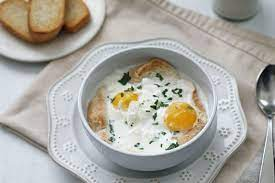

Changua

Description
The Chagua is a traditonal soup from the colombian highlands, whose ingridients come from spain when they "discovered" America. this is a typical dish and is usally eaten for breakfast or dinner.
This delicious soup was created by an ancient indigenous tribe called "Chibcha". They leave in the Andean zone of Colombia. Since the it's been a tradition that has stayed among colombian families.
Ingredients
- 1 cup of water
- Half scallion
- 2 cups of milk
- 4 eggs
- 4 coriander branches
- Salt up to taste
- Coriander leafs
- Calados (This is a kinf of bread, you can use toasted bread to.)
Preparation
- In a medium saucepan, mix the water and milk over medium heat.
- Add 3 branches of coriander and the white part of the broad leek.
- Let it boil, taking care that it does not overflow.
- The eggs are added and the flame is lowered, the eggs are cooked until they are to your liking.
- Salt and pepper to taste.
- It is carefully served in a bowl or deep plate, the pieces of bread (garlic biscuits) are placed and chopped cilantro is added.